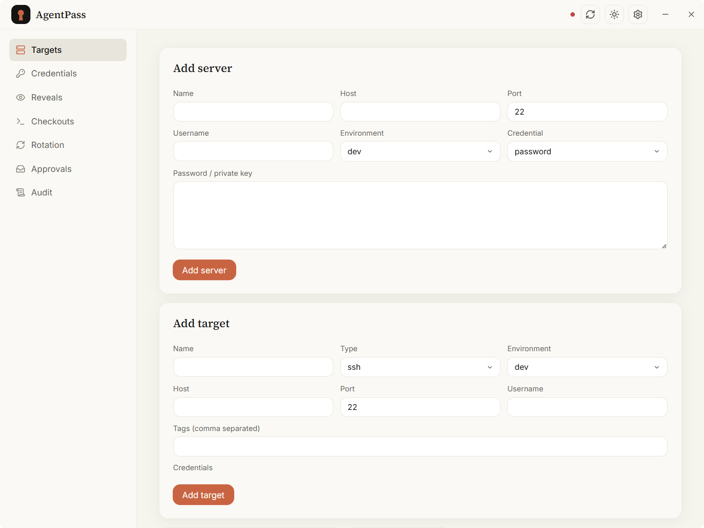
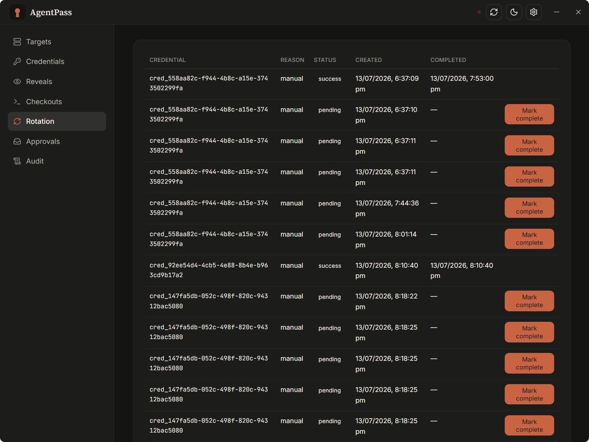

Give your AI agents the keys — on a leash.
AgentPass is a local credential manager that hands AI agents like Claude Code and Codex scoped, audited, expiring access to your servers — instead of pasting long-term secrets into a chat. Runs entirely on your machine.
Daemon + MCP bridge + desktop app · SQLite · AES-256-GCM · nothing leaves your host.
A desktop app that stays out of the way.
Register servers, mint scoped tokens, approve reveals, and read the audit — in light or dark, English or 中文.


Access an agent can use, but never keep.
Every capability is scoped, time-boxed, and written to an append-only audit log.
Checkout over reveal
Hand the agent a temporary, expiring ssh command — no long-term key ever leaves the vault. Plaintext reveal stays available but is the high-risk path.
Scoped agent tokens
Give each agent its own token — Standard for day-to-day work, or Root for full power. Scope is enforced before the request runs and attributed by identity.
Standard · RootSeparation of duties
When a credential's policy needs approval, the requester can never approve its own reveal. The approver must be a different identity — approve from the desktop while the agent runs on its scoped token.
approval-gatedRotation
Rotate after a reveal, after N reveals, or on a schedule — with an approval-aware manual flow and opt-in auto-rotation.
policy-drivenE2E-encrypted sync
Cross-device sync over a local dir, GitHub Gist, WebDAV, or S3 — secrets are encrypted before they leave the host, with tombstone-based deletion and item-level merge.
ciphertext onlyLocal by default
SQLite storage, AES-256-GCM secret blobs, a 0600 master key, and OS-level file ACLs. No cloud account required — ever.
Built for the moment an agent goes off-script.
The threat model assumes the agent is capable and occasionally wrong. Every path is scoped, expiring, and logged — so a mistake is contained, not catastrophic.
Encrypted at rest
AES-256-GCM secret blobs behind a 0600 master key with OS-level ACLs. Secrets never appear in listings, errors, or logs.
Everything expires
Checkouts and reveals are time-boxed; revoking a checkout wipes on-disk key artifacts immediately.
Append-only audit
Every reveal, checkout, rotation, and approval is recorded — redacted, attributed by identity, newest first.
No self-approval
An agent on a Standard token can request a gated reveal but can't approve it. Root — which can — is for humans, not agents.
Wire it up once. Your agents just ask.
Run the daemon
Start AgentPass on your machine. It stores targets and credentials locally and publishes a local endpoint for the MCP bridge.
Point your agent at it
Add the MCP server to Claude Code or Codex. Mint a scoped token from the desktop app and drop it in the agent's config.
Agents check out access
The agent calls checkout_ssh_access or a gated reveal_secret. You watch, approve, and audit — all from the desktop.
Download the desktop app.
Signed installers for every desktop OS. In-app updates ship through GitHub Releases.
Stop pasting secrets into chats.
Give your agents access they can use and you can revoke — with a full audit trail behind every request.